runs / 2026-10-19 / 011348-514000-baseline-419f787f
51.7分101コールでボクセル庭園HTML納品、最終検証はエラーゼロ
qwen3.8-flash-next-unsloth-ud-q4_k_xl（thinking high）がボクセル画の五重塔庭園プロンプトを受け、3104.7秒・101コールで単一ファイル pagoda-garden.html（54,458 バイト）を生成して completed・終了コード 0 で終えた。2回目の一括書き込みだけで 394.7秒/24,504トークンを費やし、以降は 29 回の edit と 42 回の eval（headless Chromium での検証）を往復して描画・地形・照明の不具合を除去した。最終メッセージは 60,180 ボクセル、75〜80fps、ゼロコンソールエラーを報告している。
成果物
work/pagoda-garden.html（54,458 バイト）をそのまま同梱している。重いシーンもあるため、必要なときだけ起動する。
pagoda-garden.html
53 KB · 起動するまで読み込まない
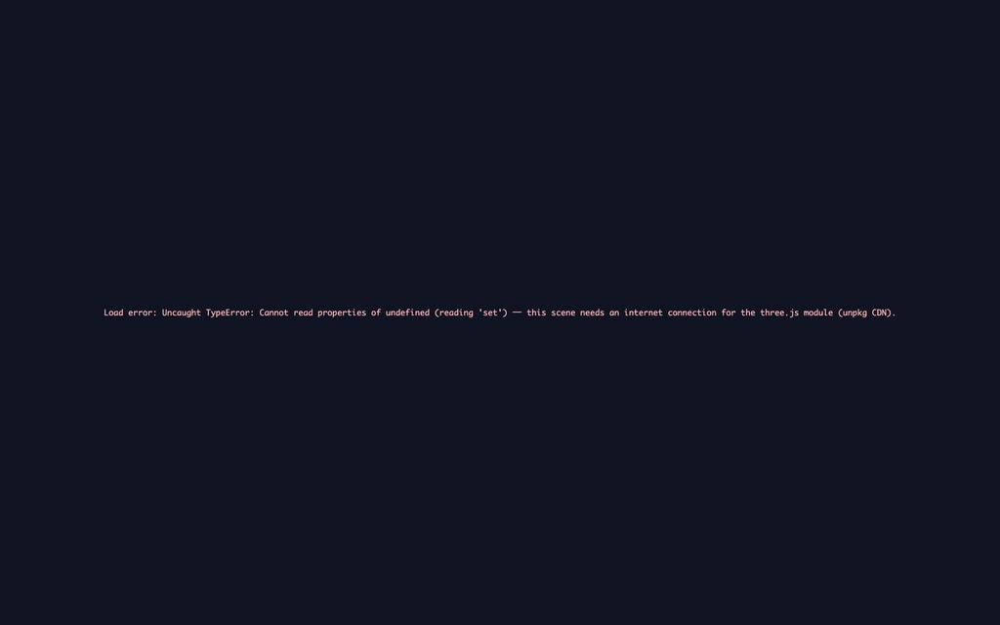
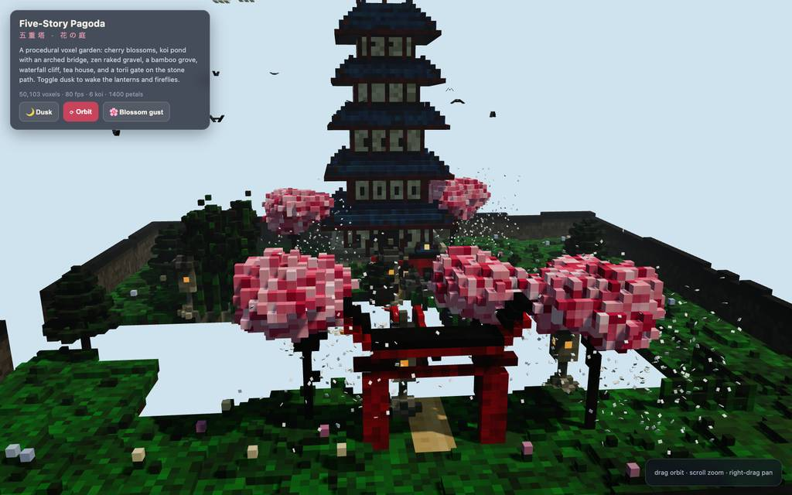
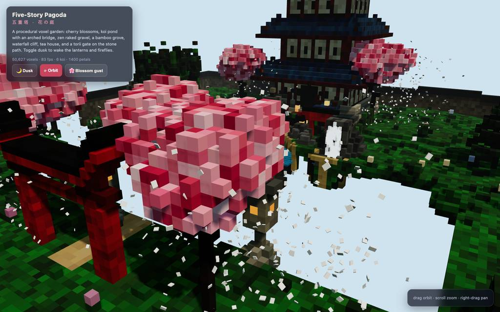
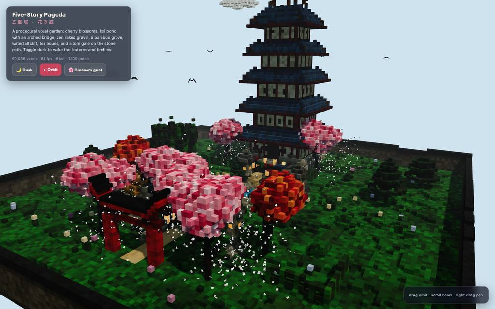
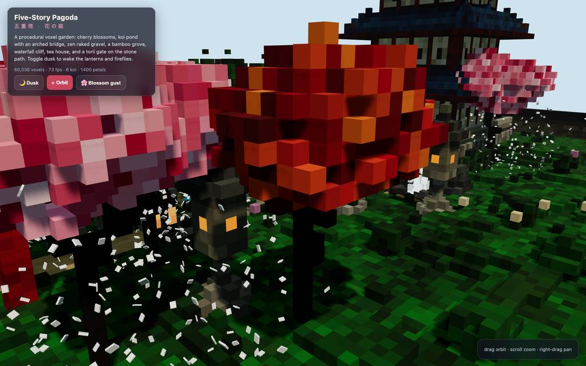
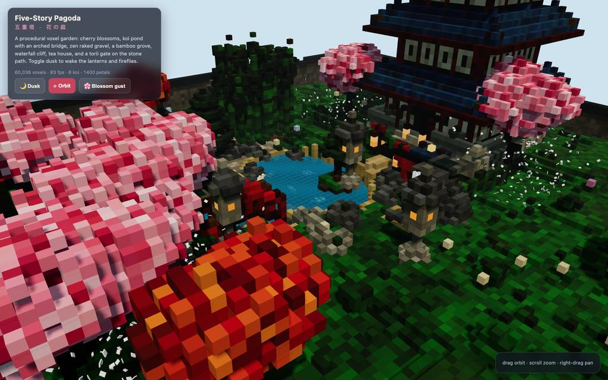
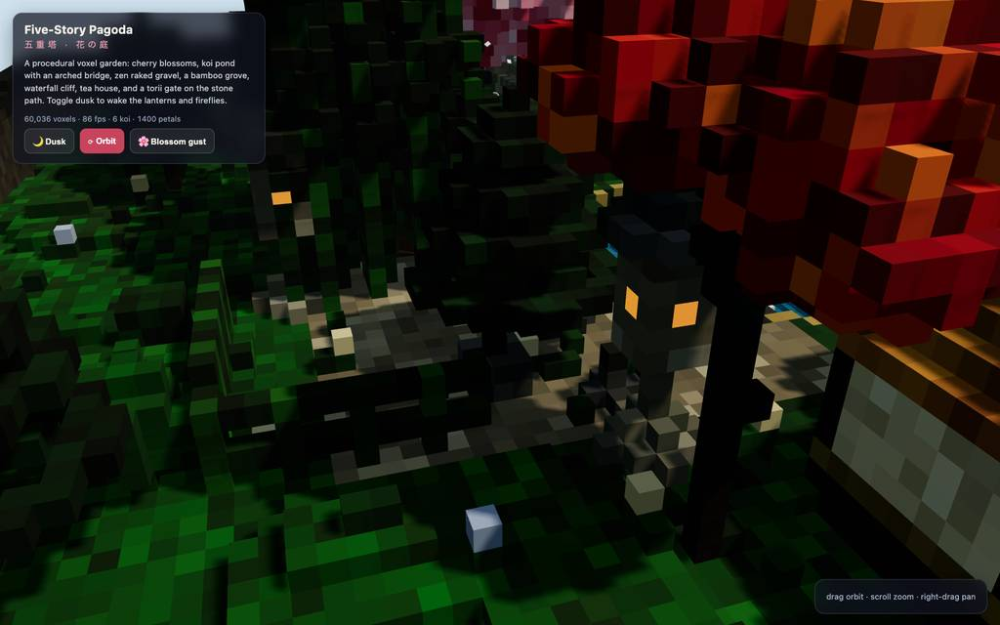
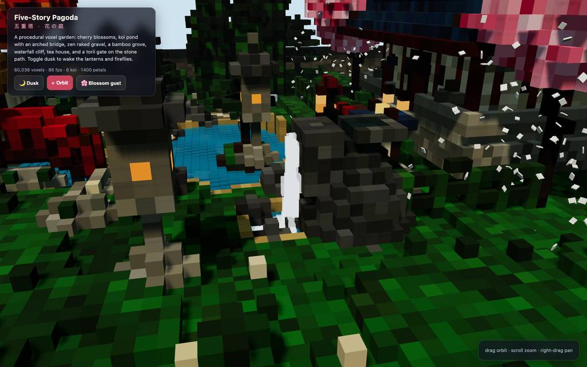
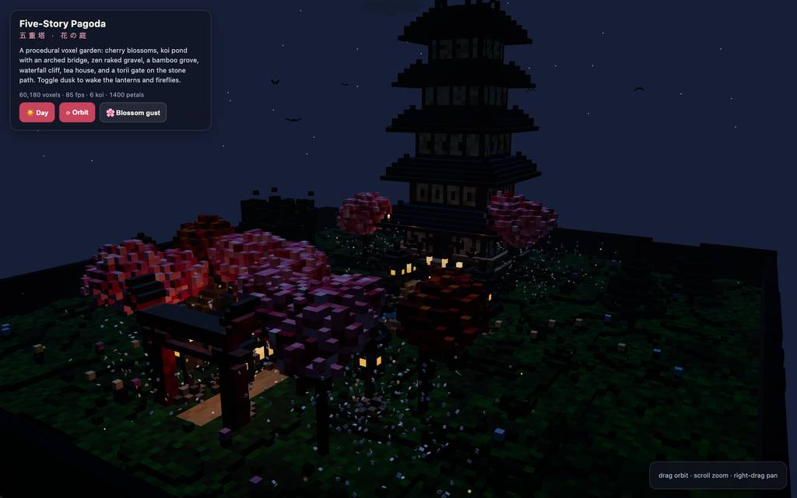
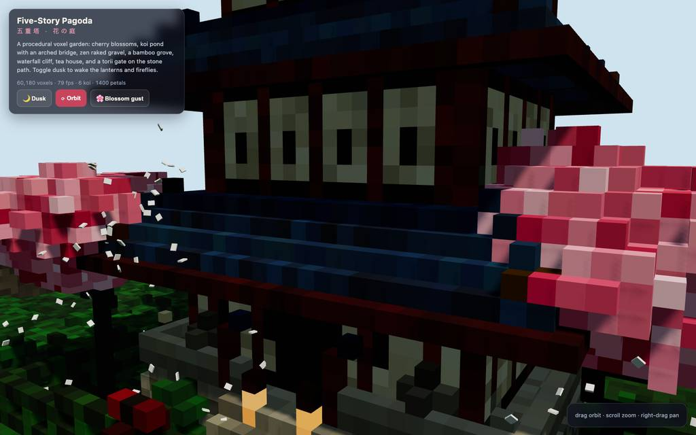
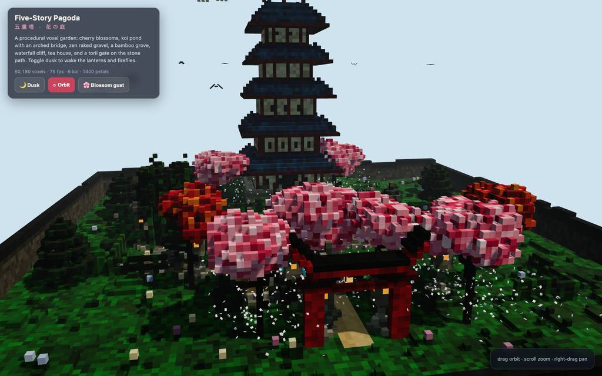
全 20 枚から等間隔に 12 枚を選んでいる。logs/events.jsonl の画像ブロックを内容ハッシュで重複排除して時系列に並べた、制作中の検証用スクリーンショット。最終版とは限らない。
成果物の構成
| 要素 | 内容 |
|---|---|
| 成果物 | pagoda-garden.html 54KB の自己完結単一ファイル。Three.js と OrbitControls は import-map 経由で unpkg から読むため、初回表示にインターネット接続が必要と明記。 |
| 五重塔 | 石舞台・欄干・階段、赤柱と障子の白壁、5 層の藍色瓦屋根（金帽の反り角）、シャチホコ、光る宝珠付き金輪飾り、狛犬と賽銭箱など、最終報告が部材を列挙。 |
| 庭園要素 | 砂浜付き鯉池、松と石灯籠のある島、赤いアーチ橋、竹林、滝の崖と釜、手水鉢、濃淡砂紋の禅庭、茅葺き茶室、鳥居、社、柵、ベンチ、苔壁と生垣、飛び石路。 |
| 樹木 | 再帰分岐の桜（ピンク 3 色調）、もみじ、層状松、葉先付き竹をボクセル生成。 |
| 動く演出 | 樹冠位置から落ちる 1,400 枚の花びら、鯉 6・鴨 3 の遊泳、水面の波紋、滝と泡、流れる雲、鳥の群れ、夕暮れの蛍、石灯籠 12 個の揺らぎ光、day↔dusk クロスフェード、gust ボタン。 |
| 描画パイプライン | Map キーの層状格納→6 隣接遮蔽カリング→マテリアル別 InstancedMesh（PBR 5 種＋発光）、ACES トーンマップ、2048² PCF ソフトシャドウ、指数フォグ。 |
| 検証数値（最終報告） | headless Chromium で 60,180 露出ボクセル、75〜80fps、day/dusk 両状態でコンソールエラーゼロと自己申告。#98〜#99 のプロダクションスモークが裏付けの実行。 |
モデルの最終メッセージから読み取った内容。コードの確認はしていない。
タイムライン
101 回の API 呼び出しを時間順に並べた。上段の帯の幅が各呼び出しの所要時間で、帯の間の空白がツールの実行時間。下段はその時点のコンテキスト長。
最も長い 2 回の生成（#2 395 秒・#1 324 秒）で 718.6 秒、壁時計の 23.2%。出力トークンの上位 4 回（#2・#1・#3・#6）で全体の 48.5%（65,999 / 136,038）。推論以外（ツール実行など）は約 167 秒（5%）。
フェーズ別の内訳
| フェーズ | 経過 | 所要 | 全体に占める割合 | 呼び出し | 出力 tok | 何をしたか |
|---|---|---|---|---|---|---|
| 初期生成 | 0:00–17:20 | 1040 秒 | 33.5% | 5 | 55,925 | #1 の bash で作業ディレクトリを確認後、#2 の write 1 回で全 HTML（24,504トークン）を一気に出力し、#3〜#5 でファイル冒頭〜ビルダー〜ループまで read で見直した。 |
| セクション修正 | 17:20–26:22 | 542 秒 | 17.5% | 15 | 28,132 | 地形・池、塔、島と橋、ランタン配置、夜間ループなどセクション単位で edit を重ね、その間 read で行番号を確認した。E1/E2 の edit 拒否はここで発生。 |
| 起動デバッグ | 26:22–29:30 | 188 秒 | 6.1% | 14 | 7,580 | node で構文チェック後、ブラウザ起動に失敗（E3/E4）しつつ起動し、エラー収集から地形ボクセル呼び出しの z 引数欠落を修正。全 voxel 呼び出しの arity 確認（#31〜#33）を経て #34 のリロードでエラー消滅を確認。 |
| 見た目調整 | 29:30–37:57 | 506 秒 | 16.3% | 23 | 18,868 | #35 のスクショ以降、屋根と水面のパレット編集を繰り返す。池が見えない問題に debug フック追加/除去（#44〜#48）、レイキャスト・ピクセル読み取り・縦方向プロブ（#54〜#57）で取り組んだ。 |
| 地形バグ追跡 | 37:57–42:21 | 265 秒 | 8.5% | 13 | 10,943 | instanced mesh 検査、グリッドサンプリング、生 voxel キーのダンプ（#58〜#66）で穴を特定し、FLATS インデックスの NaN を生むバグを #67/#69 で修正、#70 の再チェックと広角表示で検証。 |
| 光と演出仕上げ | 42:21–49:57 | 455 秒 | 14.7% | 22 | 11,756 | 多角度スクショで池・禅庭・竹を確認しつつ、砂利コントラスト（#79）、夕暮れ露光・ランタン光の到達距離/数（#82〜#89）、花びら色調（#94/#96）を調整し、#92 のヒーロービューでエラースイープ。 |
| 最終確認 | 49:57–51:43 | 107 秒 | 3.4% | 9 | 2,834 | debug フック除去と最終 syntax 検証・一時ファイル後始末（#97）、ドラッグ込みの production スモーク（#98/#99、E11 はこの中の失敗）、ブラウザを閉じて最終レポートを出力。 |
フェーズの切れ目は、ログから読み取れる作業内容の変わり目（LLM による区切り）。所要時間は、そのフェーズの最初の呼び出しの開始から次のフェーズの最初の呼び出しの開始まで。
101 回の呼び出しを表で見る
| # | 種別 | フェーズ | 開始 | 所要 秒 | prompt | うち cache | 出力 | tok/s | HTTP | ツール |
|---|---|---|---|---|---|---|---|---|---|---|
| 1 | 主ループ | 初期生成 | 0:00 | 323.9 | 7,806 | 0 | 16,446 | 52.6 | 200 | bash |
| 2 | 主ループ | 初期生成 | 5:24 | 394.7 | 24,381 | 24,252 | 24,504 | 62.2 | 200 | write |
| 3 | 主ループ | 初期生成 | 11:59 | 304.0 | 48,927 | 24,376 | 14,574 | 49.6 | 200 | read + read |
| 4 | 主ループ | 初期生成 | 17:03 | 6.6 | 72,175 | 63,503 | 137 | 60.2 | 200 | read + read |
| 5 | 主ループ | 初期生成 | 17:10 | 10.0 | 83,544 | 72,311 | 264 | 52.9 | 200 | read + read |
| 6 | 主ループ | セクション修正 | 17:20 | 198.2 | 93,886 | 83,808 | 10,475 | 54.2 | 200 | edit |
| 7 | 主ループ | セクション修正 | 20:38 | 35.6 | 105,469 | 104,361 | 1,736 | 51.3 | 200 | read |
| 8 | 主ループ | セクション修正 | 21:14 | 12.3 | 107,626 | 107,205 | 588 | 53.1 | 200 | read |
| 9 | 主ループ | セクション修正 | 21:26 | 19.3 | 113,055 | 108,214 | 969 | 57.4 | 200 | edit |
| 10 | 主ループ | セクション修正 | 21:45 | 4.5 | 115,264 | 114,023 | 134 | 48.4 | 200 | read |
| 11 | 主ループ | セクション修正 | 21:50 | 89.9 | 121,439 | 115,397 | 4,900 | 56.3 | 200 | edit |
| 12 | 主ループ | セクション修正 | 23:20 | 43.2 | 126,565 | 126,339 | 2,533 | 60.1 | 200 | edit |
| 13 | 主ループ | セクション修正 | 24:03 | 39.5 | 129,823 | 129,099 | 2,335 | 61.6 | 200 | edit |
| 14 | 主ループ | セクション修正 | 24:42 | 4.4 | 134,470 | 132,162 | 115 | 46.9 | 200 | read |
| 15 | 主ループ | セクション修正 | 24:47 | 28.0 | 136,730 | 134,585 | 1,370 | 52.5 | 200 | edit |
| 16 | 主ループ | セクション修正 | 25:15 | 5.8 | 138,531 | 138,099 | 224 | 47.9 | 200 | read |
| 17 | 主ループ | セクション修正 | 25:21 | 30.3 | 142,939 | 138,755 | 1,430 | 51.2 | 200 | edit |
| 18 | 主ループ | セクション修正 | 25:51 | 3.8 | 145,202 | 142,934 | 85 | 50.3 | 200 | read |
| 19 | 主ループ | セクション修正 | 25:55 | 9.4 | 147,900 | 145,287 | 366 | 49.1 | 200 | read |
| 20 | 主ループ | セクション修正 | 26:04 | 17.4 | 149,906 | 148,266 | 872 | 55.9 | 200 | edit |
| 21 | 主ループ | 起動デバッグ | 26:22 | 6.4 | 151,907 | 150,778 | 242 | 53.5 | 200 | bash |
| 22 | 主ループ | 起動デバッグ | 26:29 | 5.1 | 152,175 | 152,148 | 235 | 50.6 | 200 | eval |
| 23 | 主ループ | 起動デバッグ | 26:34 | 2.7 | 152,672 | 152,409 | 93 | 53.1 | 200 | eval |
| 24 | 主ループ | 起動デバッグ | 26:36 | 3.2 | 152,781 | 152,764 | 143 | 48.8 | 200 | eval |
| 25 | 主ループ | 起動デバッグ | 26:40 | 1.9 | 153,040 | 152,924 | 64 | 54.2 | 200 | read |
| 26 | 主ループ | 起動デバッグ | 26:42 | 6.0 | 153,151 | 153,103 | 299 | 57.5 | 200 | eval |
| 27 | 主ループ | 起動デバッグ | 26:56 | 4.6 | 153,625 | 153,449 | 185 | 50.4 | 200 | eval |
| 28 | 主ループ | 起動デバッグ | 27:00 | 12.8 | 155,074 | 153,810 | 548 | 50.6 | 200 | eval |
| 29 | 主ループ | 起動デバッグ | 27:13 | 21.7 | 156,006 | 155,624 | 1,009 | 48.9 | 200 | read |
| 30 | 主ループ | 起動デバッグ | 27:35 | 12.3 | 158,082 | 157,015 | 535 | 51.2 | 200 | edit |
| 31 | 主ループ | 起動デバッグ | 27:47 | 29.9 | 159,330 | 158,616 | 1,475 | 51.7 | 200 | bash |
| 32 | 主ループ | 起動デバッグ | 28:17 | 30.9 | 170,076 | 160,804 | 1,378 | 53.2 | 200 | bash |
| 33 | 主ループ | 起動デバッグ | 28:48 | 18.3 | 171,509 | 171,453 | 946 | 54.5 | 200 | bash |
| 34 | 主ループ | 起動デバッグ | 29:07 | 13.0 | 180,916 | 172,454 | 428 | 51.7 | 200 | eval |
| 35 | 主ループ | 見た目調整 | 29:30 | 5.9 | 181,756 | 181,346 | 227 | 47.8 | 200 | eval |
| 36 | 主ループ | 見た目調整 | 29:36 | 19.6 | 182,785 | 181,983 | 837 | 46.5 | 200 | read |
| 37 | 主ループ | 見た目調整 | 29:56 | 9.9 | 183,878 | 183,622 | 432 | 48.2 | 200 | edit |
| 38 | 主ループ | 見た目調整 | 30:06 | 5.1 | 184,498 | 184,309 | 202 | 50.0 | 200 | edit |
| 39 | 主ループ | 見た目調整 | 30:11 | 3.1 | 184,921 | 184,704 | 103 | 48.7 | 200 | grep |
| 40 | 主ループ | 見た目調整 | 30:14 | 7.5 | 185,237 | 185,026 | 311 | 47.6 | 200 | edit |
| 41 | 主ループ | 見た目調整 | 30:22 | 8.6 | 185,749 | 185,548 | 375 | 49.5 | 200 | eval |
| 42 | 主ループ | 見た目調整 | 30:40 | 31.3 | 186,927 | 186,124 | 1,374 | 46.3 | 200 | edit |
| 43 | 主ループ | 見た目調整 | 31:11 | 7.3 | 188,465 | 188,301 | 307 | 48.9 | 200 | eval |
| 44 | 主ループ | 見た目調整 | 31:27 | 16.8 | 189,574 | 188,774 | 675 | 44.5 | 200 | edit |
| 45 | 主ループ | 見た目調整 | 31:44 | 4.9 | 190,375 | 190,249 | 189 | 48.6 | 200 | edit |
| 46 | 主ループ | 見た目調整 | 31:49 | 3.3 | 190,662 | 190,563 | 122 | 50.5 | 200 | grep |
| 47 | 主ループ | 見た目調整 | 31:53 | 9.3 | 190,903 | 190,784 | 496 | 58.6 | 200 | eval |
| 48 | 主ループ | 見た目調整 | 32:11 | 4.0 | 191,614 | 191,399 | 135 | 45.0 | 200 | edit |
| 49 | 主ループ | 見た目調整 | 32:15 | 10.3 | 191,885 | 191,751 | 504 | 53.7 | 200 | eval |
| 50 | 主ループ | 見た目調整 | 32:34 | 24.1 | 192,782 | 192,388 | 1,146 | 49.8 | 200 | eval |
| 51 | 主ループ | 見た目調整 | 32:58 | 13.5 | 194,169 | 193,928 | 604 | 48.3 | 200 | eval |
| 52 | 主ループ | 見た目調整 | 33:13 | 42.1 | 195,640 | 194,774 | 1,908 | 47.3 | 200 | edit |
| 53 | 主ループ | 見た目調整 | 33:55 | 11.4 | 198,048 | 197,548 | 469 | 46.6 | 200 | eval |
| 54 | 主ループ | 見た目調整 | 34:16 | 42.7 | 198,665 | 142,934 | 936 | 51.7 | 200 | eval |
| 55 | 主ループ | 見た目調整 | 34:59 | 20.0 | 199,698 | 199,600 | 970 | 50.3 | 200 | eval |
| 56 | 主ループ | 見た目調整 | 35:20 | 113.7 | 200,806 | 165,974 | 4,619 | 47.1 | 200 | eval |
| 57 | 主ループ | 見た目調整 | 37:14 | 42.9 | 205,573 | 205,425 | 1,927 | 46.0 | 200 | eval |
| 58 | 主ループ | 地形バグ追跡 | 37:57 | 12.0 | 207,882 | 207,499 | 515 | 47.3 | 200 | read |
| 59 | 主ループ | 地形バグ追跡 | 38:09 | 27.8 | 208,986 | 208,398 | 1,311 | 49.3 | 200 | eval |
| 60 | 主ループ | 地形バグ追跡 | 38:37 | 27.9 | 210,447 | 210,298 | 1,299 | 48.0 | 200 | eval |
| 61 | 主ループ | 地形バグ追跡 | 39:07 | 67.3 | 211,996 | 211,745 | 3,030 | 45.6 | 200 | edit |
| 62 | 主ループ | 地形バグ追跡 | 40:15 | 5.1 | 215,392 | 215,026 | 191 | 49.2 | 200 | edit |
| 63 | 主ループ | 地形バグ追跡 | 40:20 | 8.3 | 215,722 | 215,582 | 376 | 51.6 | 200 | eval |
| 64 | 主ループ | 地形バグ追跡 | 40:36 | 14.8 | 216,178 | 216,098 | 725 | 51.6 | 200 | eval |
| 65 | 主ループ | 地形バグ追跡 | 40:51 | 12.7 | 217,028 | 216,904 | 630 | 53.1 | 200 | eval |
| 66 | 主ループ | 地形バグ追跡 | 41:04 | 15.5 | 217,717 | 217,659 | 724 | 50.2 | 200 | eval |
| 67 | 主ループ | 地形バグ追跡 | 41:19 | 30.4 | 218,484 | 218,440 | 1,390 | 47.0 | 200 | edit |
| 68 | 主ループ | 地形バグ追跡 | 41:50 | 2.8 | 220,043 | 219,874 | 80 | 45.3 | 200 | read |
| 69 | 主ループ | 地形バグ追跡 | 41:52 | 8.4 | 220,757 | 220,125 | 335 | 47.6 | 200 | edit |
| 70 | 主ループ | 地形バグ追跡 | 42:01 | 7.3 | 221,314 | 221,094 | 337 | 54.6 | 200 | eval |
| 71 | 主ループ | 光と演出仕上げ | 42:21 | 39.5 | 221,797 | 165,974 | 699 | 48.3 | 200 | eval |
| 72 | 主ループ | 光と演出仕上げ | 43:01 | 31.6 | 222,643 | 165,974 | 311 | 47.8 | 200 | eval |
| 73 | 主ループ | 光と演出仕上げ | 43:34 | 23.5 | 223,102 | 189,014 | 353 | 46.0 | 200 | eval |
| 74 | 主ループ | 光と演出仕上げ | 43:58 | 33.2 | 223,603 | 189,014 | 828 | 47.9 | 200 | eval |
| 75 | 主ループ | 光と演出仕上げ | 44:32 | 25.6 | 224,579 | 189,014 | 467 | 49.6 | 200 | eval |
| 76 | 主ループ | 光と演出仕上げ | 44:59 | 12.5 | 225,194 | 212,054 | 283 | 48.0 | 200 | eval |
| 77 | 主ループ | 光と演出仕上げ | 45:12 | 27.5 | 225,625 | 212,054 | 1,040 | 49.9 | 200 | eval |
| 78 | 主ループ | 光と演出仕上げ | 45:40 | 40.3 | 226,866 | 226,665 | 1,850 | 47.0 | 200 | eval |
| 79 | 主ループ | 光と演出仕上げ | 46:20 | 43.7 | 229,007 | 228,716 | 2,003 | 46.7 | 200 | edit |
| 80 | 主ループ | 光と演出仕上げ | 47:04 | 5.9 | 231,206 | 231,009 | 237 | 47.9 | 200 | eval |
| 81 | 主ループ | 光と演出仕上げ | 47:19 | 21.9 | 231,589 | 212,054 | 588 | 47.7 | 200 | eval |
| 82 | 主ループ | 光と演出仕上げ | 47:45 | 18.5 | 232,323 | 212,054 | 402 | 46.1 | 200 | edit |
| 83 | 主ループ | 光と演出仕上げ | 48:04 | 3.0 | 232,859 | 232,725 | 92 | 44.2 | 200 | grep |
| 84 | 主ループ | 光と演出仕上げ | 48:07 | 7.3 | 233,433 | 232,951 | 293 | 48.1 | 200 | edit |
| 85 | 主ループ | 光と演出仕上げ | 48:14 | 4.0 | 234,184 | 233,725 | 135 | 50.4 | 200 | grep |
| 86 | 主ループ | 光と演出仕上げ | 48:18 | 6.3 | 234,469 | 234,321 | 247 | 47.5 | 200 | edit |
| 87 | 主ループ | 光と演出仕上げ | 48:25 | 6.9 | 234,844 | 234,715 | 305 | 51.1 | 200 | edit |
| 88 | 主ループ | 光と演出仕上げ | 48:31 | 7.4 | 235,321 | 235,149 | 269 | 42.2 | 200 | grep |
| 89 | 主ループ | 光と演出仕上げ | 48:39 | 7.1 | 235,735 | 235,590 | 311 | 51.1 | 200 | edit |
| 90 | 主ループ | 光と演出仕上げ | 48:46 | 5.8 | 236,211 | 236,045 | 247 | 51.1 | 200 | eval |
| 91 | 主ループ | 光と演出仕上げ | 49:06 | 20.2 | 236,604 | 212,054 | 378 | 48.8 | 200 | eval |
| 92 | 主ループ | 光と演出仕上げ | 49:30 | 21.3 | 237,128 | 212,054 | 418 | 47.3 | 200 | eval |
| 93 | 主ループ | 最終確認 | 49:57 | 23.8 | 237,655 | 212,054 | 486 | 42.9 | 200 | grep |
| 94 | 主ループ | 最終確認 | 50:20 | 3.9 | 238,323 | 238,143 | 137 | 48.4 | 200 | edit |
| 95 | 主ループ | 最終確認 | 50:24 | 3.8 | 238,608 | 238,460 | 138 | 50.2 | 200 | grep |
| 96 | 主ループ | 最終確認 | 50:28 | 5.5 | 238,888 | 238,748 | 238 | 52.4 | 200 | edit |
| 97 | 主ループ | 最終確認 | 50:34 | 8.1 | 239,382 | 239,127 | 320 | 46.3 | 200 | bash |
| 98 | 主ループ | 最終確認 | 50:42 | 6.8 | 239,732 | 239,701 | 333 | 53.6 | 200 | eval |
| 99 | 主ループ | 最終確認 | 50:59 | 7.5 | 240,372 | 240,065 | 303 | 47.5 | 200 | eval |
| 100 | 主ループ | 最終確認 | 51:12 | 18.5 | 240,812 | 212,054 | 219 | 44.0 | 200 | eval |
| 101 | 主ループ | 最終確認 | 51:30 | 13.3 | 241,055 | 241,032 | 660 | 51.2 | 200 |
試行錯誤
ツールがエラー（isError）を返した結果の一覧。ツールは成功したのにモデル自身が内容を壊したケースは、ここには出ない。
エラーとして記録された 11 件
| 経過 | ツール | 起きたこと | 分類 |
|---|---|---|---|
| 23:20 | edit | 「CUT 537*」形式のアンカーが 537 行目の構文ブロックを解釈できず edit が拒否された。line 1: `CUT 537*` could not resolve a syntactic block beginning on line 537 (unsupported language, blank/closer line, or parse error). Use `CUT 537.=M` with explicit lines. 535: blossomTree(x,z,{pale | CUT構文エラー |
| 24:03 | edit | 724〜749 行への edit が、事前に表示されていない範囲の参照（行番号ずれ）で拒否された。This edit anchors to lines 724-749 of pagoda-garden.html that [pagoda-garden.html#F7A8] never displayed (it showed a partial range, a search hit, or a folded summary). Actual file content at those lin | anchor未確認 |
| 26:34 | eval | browser.open() に options オブジェクト以外の引数を渡して TypeError が発生した。TypeError: browser.open() expects an options object at validateOptions ([eval-prelude:browser]:5:23) at open ([eval-prelude:browser]:247:32) at <anonymous> (js-cell-615cea51-9dfc-47a9-89c6-8a07d48e19c | API誤用 |
| 26:42 | read | 存在しないデバイスパス xd://browser を read しようとして失敗した。No such tool: xd://browser. Mounted devices: ast_edit, debug, lsp. Active top-level tools are also dispatchable via xd://<tool>. | パス指定 |
| 30:06 | edit | 348 行と 395〜396 行への edit が未表示範囲の参照で拒否された。This edit anchors to lines 348, 395-396 of pagoda-garden.html that [pagoda-garden.html#47EC] never displayed (it showed a partial range, a search hit, or a folded summary). Actual file content at thos | anchor未確認 |
| 32:02 | eval | ページ内 window.__vox の debug フックが未定義のままレイキャスト probe を実行して TypeError になった。TypeError: Cannot destructure property 'THREE' of 'window.__vox' as it is undefined. at #f (/$bunfs/root/chunks/cli-8mws542k.js:10890:15) at async evaluate (/$bunfs/root/chunks/cli-8mws542k.js:10838:2 | 実行時エラー |
| 41:50 | edit | 142〜143 行への edit が未表示範囲の参照で拒否された。This edit anchors to lines 142-143 of pagoda-garden.html that [pagoda-garden.html#36D2] never displayed (it showed a partial range, a search hit, or a folded summary). Actual file content at those lin | anchor未確認 |
| 48:04 | edit | 1044 行への edit が未表示範囲の参照で拒否された。This edit anchors to lines 1044 of pagoda-garden.html that [pagoda-garden.html#52A2] never displayed (it showed a partial range, a search hit, or a folded summary). Actual file content at those lines: | anchor未確認 |
| 48:24 | edit | 844 行への edit が未表示範囲の参照で拒否された。This edit anchors to lines 844 of pagoda-garden.html that [pagoda-garden.html#F60F] never displayed (it showed a partial range, a search hit, or a folded summary). Actual file content at those lines: | anchor未確認 |
| 50:24 | edit | 1170 行への edit が未表示範囲の参照で拒否された。This edit anchors to lines 1170 of pagoda-garden.html that [pagoda-garden.html#6DA6] never displayed (it showed a partial range, a search hit, or a folded summary). Actual file content at those lines: | anchor未確認 |
| 50:49 | eval | ドラッグスモーク中の eval で mouseMove に有限でない x 座標を渡してエラーとなった。ToolError: mouseMove x must be a finite number at A (/$bunfs/root/chunks/cli-j5hqgm39.js:271:16) at QYe (/$bunfs/root/chunks/cli-j5hqgm39.js:1221:4) at #K (/$bunfs/root/chunks/cli-hzhwcypa.js:1532:23) | API誤用 |
経過は、そのツールを呼んだターンの終了時刻。エラー本文は先頭 300 文字までで、パスや接続先は伏せてある。
気づいた点
計測データ（呼び出し一覧・エラー・最終メッセージ）だけから LLM が書いた読み取り。文中の数値は、上の KPI や表と照らして確認する。
初回書き込みの支配力
#1（323.9s）+ #2（394.7s）だけで 718.6 秒、全体の約 23% を占める。#2 の出力 24,504 トークンは全コール最大で、#1〜#3 の 55,524 トークンは総出力 136,038 の約 41% に達する。後続 98 コール合計は 8 万トークン強と分散している。
edit アンカー失敗の反復
29 回の edit 中 7 回が拒否（E1、E2、E5、E7、E8、E9、E10）で、6 回は未表示行レンジへの anchor 参照。直後に grep/read で行番号の再取得（#83、#85、#88、#95 など）→ 再 edit が毎回続いており、編集のたびに全行がずれる環境での確証なき anchor 指定が失敗源。
eval を軸にした検証ループ
101 回中 42 回が eval で、#22 のブラウザ起動から #99 の最終スイープまでスクショと probe が計測の中心。単発最大は #56 の池横断縦プロブ（113.7s、4,619 トークン）で、視覚不具合の切り分けに最も長い単一検証が使われた。
2つのデバッグ弧
第 1 弧（#22〜#34）はブラウザ API 誤用と地形呼び出しの z 引数欠落という「起動直後の実行時不整合」で、arity 総点検（#31〜#33）後に #34 のリロードで消滅を確認。第 2 弧（#58〜#70）は池・地形の穴という「生成ロジックの欠陥」で、生データ暴露→NaN 原因の FLATS インデックス特定→修正→#70 再検証の順に解かれている。
コンテキスト余裕と軽量な終盤
ピークコンテキスト 241,055 はウィンドウ 1,048,576 の約 23% で、圧縮なく 101 コールが走った。#97 以降の最終検証 5 コールは 135〜660 トークンと軽く、作業負荷は視覚デバッグ期（#44〜#70）に集中している。
入力と設定
Design and create a very creative, elaborate, and detailed voxel art scene of a pagoda in a beautiful garden with trees, including some cherry blossoms. Make the scene impressive and varied and use colorful voxels. Add as many details as possible to showcase your attention to them. Use whatever libraries to get this done but make sure I can paste it all into a single HTML file.
input/prompt.md の全文。SHA-256 は ceece4685b37…。
| omp の起動オプション | --print --mode json --thinking high --no-title --approval-mode yolo |
| upstream | （接続先は伏せている） |
| タイムアウト | 10,800 秒 |
config/00-omp.yml
setupVersion: 2 autolearn: enabled: false autoContinue: false